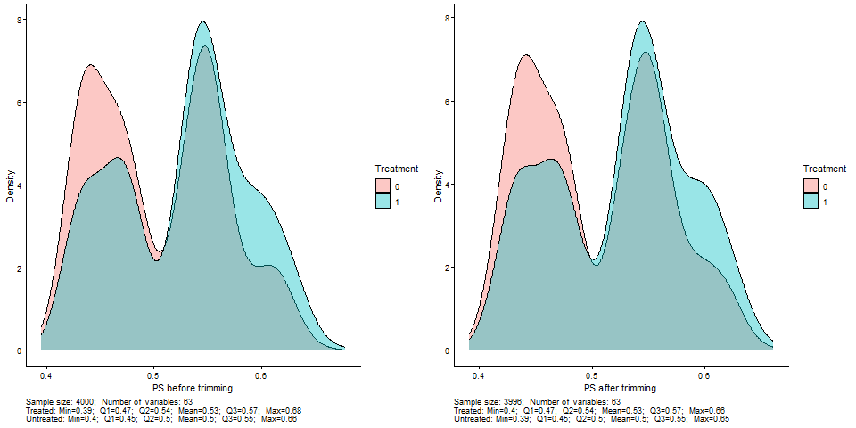
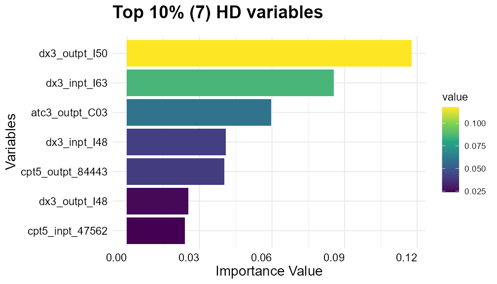

8. hdiCF：高维理赔数据
PS_trim()、FIX_LOW_FREQ()、GG_Xs() 与 variable_type = “hd”，在模拟理赔数据上走一遍
iCF 要求事先定义好协变量。hdiCF（high-dimensional iCF）把 高维倾向评分（hdPS）的特征识别思路搬过来：从诊断、操作、处方代码里 自动生成候选变量，再交给 iCF 找亚组。据 PubMed 收录的方法论文 （Wang 等，Am J Epidemiol 2025;194(7):2085–2097， doi:10.1093/aje/kwae322，2024-09-05 在线发表）， 算法分三步：
- 高维特征识别：按维度（住院/门诊诊断、住院/门诊操作、门诊处方） 取基线期患病率最高的若干代码，按出现频次把每个代码编成有序变量 （0 未出现、1 出现一次、2 零星、3 频繁）；
- 倾向评分修剪与高维特征准备；
- iCF。
同组的后续论文比较了这种”每个代码一个四级有序变量”与标准 hdPS “每个代码三个二分类变量”的做法（Am J Epidemiol 2025;194(10):2915–2927， doi:10.1093/aje/kwaf127）。
hdiCF 不是一个 R 包
作者另有仓库 tianshengwang/hdiCF（同样没有许可证文件）， 其中第 1 步是 SAS 程序，R 部分是 iCF 源码的一份拷贝加 README 里的几段脚本。 R 端真正用到的 hdiCF 专属函数都已在 iCF 包里：
| 函数 | 作用 |
|---|---|
PS_trim(dat, W_hat, trimmethod, trimPct) |
按倾向评分修剪样本 |
FIX_LOW_FREQ(dat, Lcutoff) |
合并高维变量里样本太少的级别 |
GG_Xs(pcttop) |
只画入选的高维变量 |
CF_RAW_key(..., variable_type = "hd", hdPctTop) |
按重要性分位数取前一部分变量 |
hdiCF README 里另有两个内联定义的整理函数 PREPARE_HD()、XYW()， 只是把数据拆成 X、Y、W 并赋给全局，本页直接写出等价的几行。
模拟一份理赔式数据
SAS 那一步无法在这里演示，下面直接构造第 1 步的产物： 5 个维度各 12 个代码、每个代码编为 0–3 级，加上年龄段、性别、种族，共 63 个协变量，n = 4 000。 真实效应修饰：门诊心衰诊断 dx3_outpt_I50 出现过的人，治疗使结局风险下降 15 个百分点； 用过袢利尿剂 atc3_outpt_C03 的人再降 10 个百分点。其余代码只作混杂或噪声。
set.seed(7)
n <- 4000
codes <- list(dx3_inpt = c("I50", "I25", "I48", "N18", "J44", "E11", "I10", "I63", "K92", "R07", "Z95", "I21"),
dx3_outpt = c("I50", "I25", "I48", "N18", "J44", "E11", "I10", "E78", "M17", "G47", "F32", "H35"),
cpt5_inpt = c("93306", "71046", "36556", "92928", "33249", "43239", "47562", "27447", "99291", "93458", "31500", "36620"),
cpt5_outpt = c("85610", "93000", "80053", "83036", "80061", "93306", "71046", "99213", "99214", "36415", "82947", "84443"),
atc3_outpt = c("C03", "C07", "C09", "C10", "B01", "A10", "N02", "R03", "N06", "M01", "C08", "H03"))
hd <- list()
for (d in names(codes)) for (cd in codes[[d]]) {
p <- if (cd %in% c("I50", "C03") && d %in% c("dx3_outpt", "atc3_outpt")) 0.35 else runif(1, 0.05, 0.40)
pr <- if (runif(1) < 0.2) c(0.6, 0.39, 0.01) else c(0.4, 0.4, 0.2) # 部分代码"频繁"级很稀少
hd[[paste0(d, "_", cd)]] <- ifelse(runif(n) < p, sample(1:3, n, TRUE, prob = pr), 0)
}
hd <- as.data.frame(hd)
age <- sample(1:5, n, TRUE); sex <- rbinom(n, 1, 0.5); race <- sample(1:3, n, TRUE, prob = c(.8, .12, .08))
hf <- hd$dx3_outpt_I50 >= 1; diur <- hd$atc3_outpt_C03 > 0
W <- rbinom(n, 1, plogis(-0.2 + 0.6 * hf + 0.5 * diur - 0.3 * sex + 0.2 * (hd$dx3_outpt_E11 > 0)))
pY <- plogis(-1.2 + 0.8 * hf + 0.5 * diur + 0.15 * age + 0.3 * (hd$dx3_inpt_N18 > 0))
pY <- pmin(pmax(pY - W * (0.15 * hf + 0.10 * diur), 0.001), 0.999)
Y <- rbinom(n, 1, pY)
Train_ID <- data.frame(BENE_ID = seq_len(n),
IndexDate = as.Date("2017-01-01") + sample(0:700, n, TRUE),
Y, W, age, sex, race, hd)
dim(Train_ID)
#> [1] 4000 67结局均值 0.39，治疗组比例 0.52。
第 2 步：倾向评分与修剪
先用全部 63 个变量跑一次原始森林，只为拿到 \(\hat W\)：
dxgroup <- 3; atcgroup <- 3 # FIX_LOW_FREQ() 靠这两个全局变量识别高维列
Train <- Train_ID %>% dplyr::select(-BENE_ID, -IndexDate)
vars_forest <- setdiff(colnames(Train), c("Y", "W"))
X <- Train[, vars_forest]; Y <- Train$Y; W <- Train$W
cf_hd <- quiet(CF_RAW_key(Train, 1, "hd", hdPctTop = 0.90))
W.hat <- cf_hd$W.hatPS_trim(dat, W_hat, trimmethod, trimPct)| 参数 | 含义 |
|---|---|
dat |
第 1 列是 ID、第 2 列是名为 IndexDate 的日期列，且含 W。函数按列名取 IndexDate，返回前却按位置删掉第 1、2 列，所以两者都得在原位 |
W_hat |
与 dat 按行对应的倾向评分 |
trimmethod |
"commonrange"：保留 \(\hat e \in [\min(\hat e\mid W{=}1),\ \max(\hat e\mid W{=}0)]\)；"asymmetrical"：保留 \([\,P_{k}(\hat e\mid W{=}1),\ P_{100-k}(\hat e\mid W{=}0)\,]\) |
trimPct |
仅 "asymmetrical" 用，\(k\) 只能取 0、0.1、1、5、10、15、20 之一（源码里预算好的分位数） |
返回 list(修剪后的数据, 保留下来的 ID 与日期)，前者已去掉第 1、2 列。
detach("package:plyr")
按 README 的加载顺序，plyr 挂在 dplyr 之后，PS_trim() 里的 group_by(W) %>% summarise(...) 会被 plyr::summarise() 接管、丢掉分组； 随后 filter(W == 1) 在汇总表里找不到列 W，转而读到全局变量 W（长度 4 000）， 报错：
ℹ In argument: `W == 1`.
Caused by error:
! `..1` must be of size 1, not size 4000.作者的 hdiCF README 也是先 detach("package:plyr") 再调用。
detach("package:plyr")
trim <- PS_trim(Train_ID, W.hat, "commonrange", NA)
Train <- trim[[1]]
nrow(Train)
#> [1] 3996
nrow(PS_trim(Train_ID, W.hat, "asymmetrical", 1)[[1]])
#> [1] 3873共同取值范围修剪去掉 4 人，1% 非对称修剪去掉 127 人。本例倾向评分只在 0.39–0.68 之间， 两组重叠很好：

GG_PS() 写到工作目录的 png 原件。合并稀疏级别：FIX_LOW_FREQ()
FIX_LOW_FREQ(dat, Lcutoff)只处理列名以 dx<dxgroup>、cpt5、atc<atcgroup> 开头的变量（dxgroup、atcgroup 是全局对象）。某一级观测数少于 Lcutoff 时向下合并： 第 3 级不足 → 3 并入 2；第 2 级不足 → 2、3 都并入 1；第 1 级不足 → 1 并入 0。 目的是避免交叉验证时某一折缺少某个级别。
X <- Train[, vars_forest]
X_fixed <- FIX_LOW_FREQ(X, Lcutoff = 20)60 个高维列里有 13 个被改动，全部是第 3 级不足 20 人、并入第 2 级，例如：
| 变量 | 合并前 | 合并后 |
|---|---|---|
dx3_inpt_E11 |
0:3763 1:132 2:98 3:3 | 0:3763 1:132 2:101 |
dx3_inpt_K92 |
0:3036 1:600 2:350 3:10 | 0:3036 1:600 2:360 |
cpt5_inpt_31500 |
0:3752 1:139 2:101 3:4 | 0:3752 1:139 2:105 |
atc3_outpt_A10 |
0:2432 1:928 2:625 3:11 | 0:2432 1:928 2:636 |
两个源码细节：各级频数在函数开头一次算好，合并后不再更新； 所有级别都稀疏时变量会变成常数列，函数不会删除它。
合并之后要重建 Train
X <- X_fixed
Train <- data.frame(Y = Train$Y, W = Train$W, X)README 写的是 Train <<- Train[, c("Y", "W", colnames(X))]。 这只是按列名从旧 Train 里取列，合并结果只进了全局 X，没进 Train （本机核对：两者 identical() 为 FALSE）。之后森林读全局 X（已合并）， 而 iCFCV(dat = Train) 的转换结局模型用 Train（未合并）， 验证折里一旦出现训练折没有的稀疏级别，predict() 就报 factor ... has new levels 3。是否触发取决于稀疏级别落在哪一折： 本机 2026-09-26 的一次运行触发过；本次用 treeNo = 50、iterationNo = 2 重跑没有触发。无论触发与否，这样得到的 Train 都不是想要的数据。
第 3 步：按重要性取前 10%，运行 iCF
在修剪、合并后的数据上重跑原始森林，这次要用它的 \(\hat Y\)、\(\hat W\) 和重要性：
Y <- Train$Y; W <- Train$W
cf_hd <- quiet(CF_RAW_key(Train, 1, "hd", hdPctTop = 0.90))
Y.hat <- cf_hd$Y.hat; W.hat <- cf_hd$W.hat
HTE_P_cf.raw <- cf_hd$HTE_P_cf.raw
varimp_cf <- cf_hd$varimp_cf # GG_Xs() 读全局 varimp_cf 与 X
selected_cf.idx <- cf_hd$selected_cf.idx
HTE_P_cf.raw
#> [1] 4.47e-05
colnames(X)[selected_cf.idx]
#> [1] "dx3_inpt_I48" "dx3_inpt_I63" "dx3_outpt_I50" "dx3_outpt_I48" "cpt5_inpt_47562"
#> [6] "cpt5_outpt_84443" "atc3_outpt_C03"63 个变量里取重要性高于第 90 百分位的 7 个。两个真实修饰变量都在里面， 但 dx3_inpt_I63（重要性排第 2）等 5 个是噪声。
GG_Xs(0.90)
GG_Xs(0.90)：入选的 7 个变量。GG_Xs() 没有数据参数，读全局 varimp_cf 与 X。全部 63 个变量的重要性可以用 GG_VI(varimp_cf, "63 HD variables", colnames(X)) 画， 图很高（本机按 8 × 11 英寸输出），这里只给链接：完整重要性图。

vars_catover2 <- find_level_over2(X) # 62 个：0–3 级的代码、5 级的年龄、3 级的种族
leafsize <- list(D5 = 85, D4 = 65, D3 = 45, D2 = 25) # 演示起见沿用第 4 页的值，未重新调参
res_hd <- quiet(iCFCV(dat = Train, K = 5, treeNo = 100, iterationNo = 5, min.split.var = 4,
split_val_round_posi = 0, P_threshold = 1, variable_type = "hd",
hdPctTop = 0.90, HTE_P_cf.raw = HTE_P_cf.raw))
res_hd$selectedSG_ori$majority
#> subgroupID subgroup
#> 1 1 dx3_outpt_I50<=0 & atc3_outpt_C03>0
#> 2 2 dx3_outpt_I50<=0 & dx3_inpt_I48<=0 & atc3_outpt_C03<=0
#> 3 3 dx3_outpt_I50<=0 & dx3_inpt_I48>0 & atc3_outpt_C03<=0
#> 4 4 dx3_outpt_I50>0 & dx3_inpt_I63<=0
#> 5 5 dx3_outpt_I50>0 & dx3_inpt_I63>0
res_hd$selectedSG_stability_ori
#> |grp_pick |stability_vote_mean4CV |stability_CV |mse_g2_Model |mse_g3_Model |mse_g4_Model |mse_g5_Model |
#> |W:G5x |0.2 |1 |1.00586 |1.00408 |0.99193 |0.98765 |本机耗时 76 秒。选中 D5，折内稳定性只有 0.2。与真实效应（风险差）对照：
| 亚组 | n | CATE_iptw |
真实效应 |
|---|---|---|---|
dx3_outpt_I50>0 & dx3_inpt_I63>0 |
539 | −0.27 (−0.36, −0.19) | −0.182 |
dx3_outpt_I50>0 & dx3_inpt_I63<=0 |
871 | −0.14 (−0.21, −0.08) | −0.187 |
dx3_outpt_I50<=0 & atc3_outpt_C03>0 |
867 | −0.14 (−0.21, −0.08) | −0.100 |
dx3_outpt_I50<=0 & dx3_inpt_I48>0 & atc3_outpt_C03<=0 |
695 | −0.03 (−0.10, 0.05) | 0 |
dx3_outpt_I50<=0 & dx3_inpt_I48<=0 & atc3_outpt_C03<=0 |
1 024 | 0.01 (−0.05, 0.07) | 0 |
| 总体 | 3 996 | −0.09 (−0.12, −0.06) | — |
两个真实修饰变量都被找到，而且层级顺序正确（先按心衰切，心衰阴性者再按利尿剂切）。 但也多了两处噪声切分：dx3_inpt_I63 把心衰患者切成真实效应几乎相同 （−0.182 与 −0.187）的两组，估计值却分别是 −0.27 与 −0.14； dx3_inpt_I48 在”两者皆无”的人里又切了一刀，两边真实效应都是 0。 二分类结局、n = 4 000 时，这类噪声切分很常见； 而第 9 页说明的交叉验证缺陷让它更难被察觉。
与作者 README 设置的差别
| 设置 | 本页 | hdiCF README |
|---|---|---|
hdPctTop |
0.90 | 0.95 |
treeNo / iterationNo |
100 / 5 | 1 000 / 100 |
| 叶大小 | 沿用 25/45/65/85，未调 | 用 MinLeafSizeTune() 调 |
| 修剪 | "commonrange" |
"commonrange" |
Lcutoff、dxgroup、atcgroup |
20、3、3 | 20、3、3 |
真实分析应按 README 的量级设置，并先调叶大小。